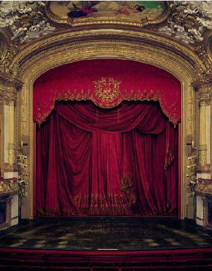
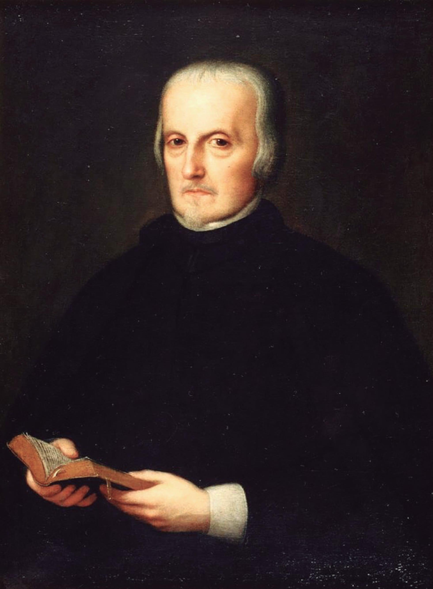
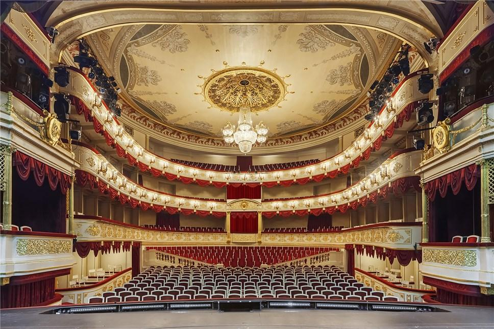
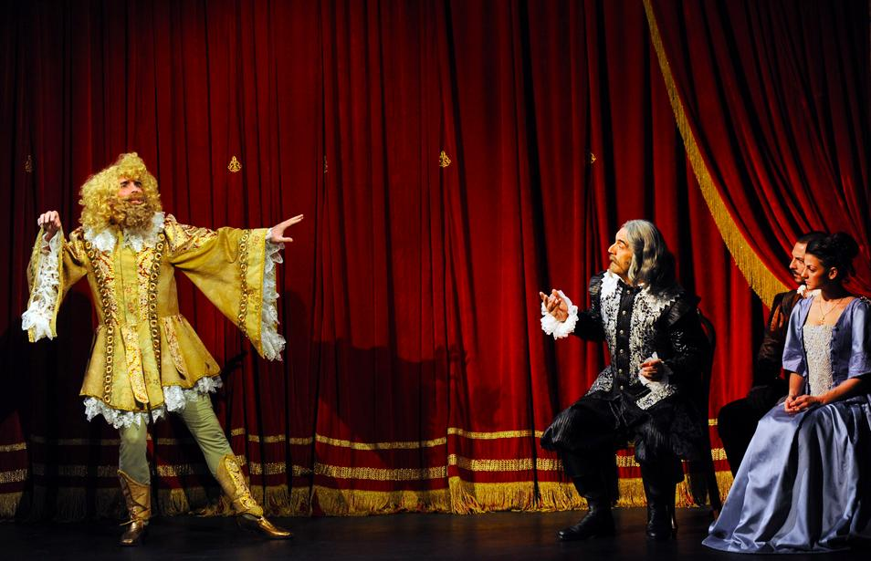

¿Qué es?
"El Gran Teatro del Mundo" es un auto sacramental escrito por Pedro Calderón de la Barca durante el Siglo de Oro español. La obra representa la vida como un escenario donde cada persona recibe un papel otorgado por Dios y, al finalizar la representación, todos son juzgados según sus acciones.
El autor
Pedro Calderón de la Barca fue uno de los dramaturgos más importantes de la literatura española. Sus obras se caracterizan por la profundidad filosófica, el simbolismo y la reflexión sobre la vida, el destino y la fe.

Personajes principales
El Autor
Dios, quien organiza la representación del mundo.
El Rey
Representa el poder y la responsabilidad.
El Rico
Simboliza la riqueza y las tentaciones materiales.
El Pobre
Representa la humildad y la fe.
La Hermosura
Representa la belleza pasajera.
El Labrador
Simboliza el trabajo y la sencillez.

Mensaje de la obra
La obra enseña que todas las personas, sin importar su posición social, son iguales al final de la vida. Lo verdaderamente importante no es el papel que se desempeña en el mundo, sino la forma en que se actúa durante la existencia.
Galería
